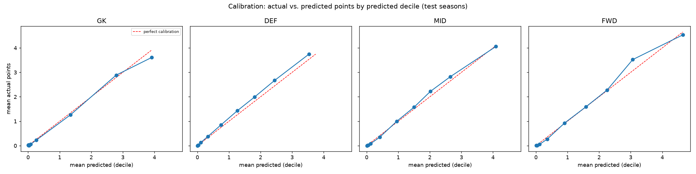
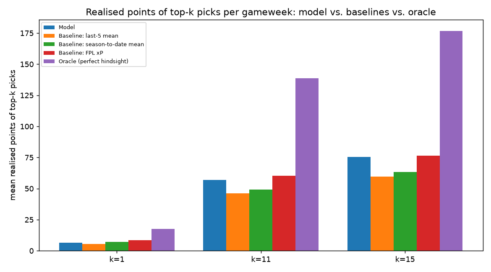
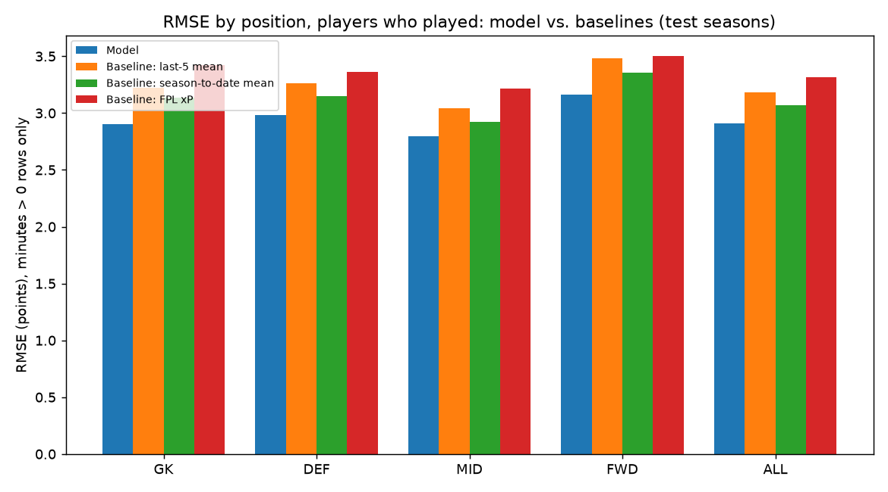
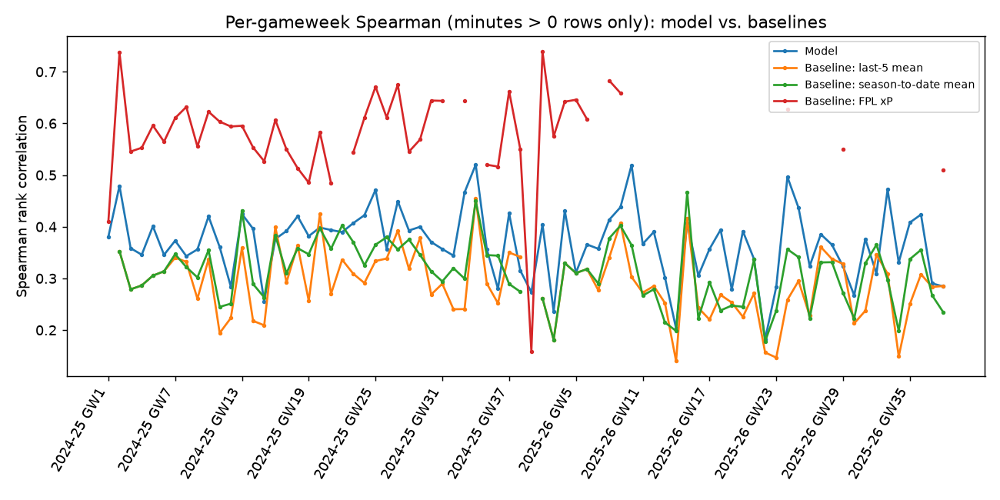
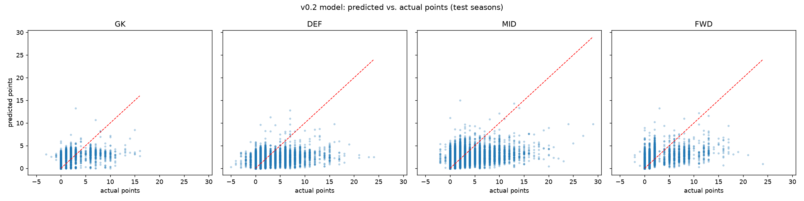

Headline: model vs. baselines vs. FPL's own xP
All positions pooled, on the frozen test seasons. Two numbers per method: over every row, and restricted to gameweeks the player actually played (minutes > 0) -- see "what this does and doesn't do" below for why that split matters.
The two skills, split out
"Predict ~0 for players who won't play" and "rank the players who do play" are different skills. The all-rows column is dominated by the first; the minutes>0 column isolates the second.
Per-position breakdown
Model only, minutes > 0 rows. Tap a position to filter.
Decision metric: top-k picks (unconstrained)
Within each gameweek, take each method's top-k predicted players. Precision@k = fraction that were also the actual top-k scorers. Realised points = what those picks actually returned, vs. a perfect-hindsight oracle as the ceiling. No budget, formation, or per-club limit -- a genuine decision only at k=1 (captaincy); k=11/15 is an upper bound on ranking quality, not a proposed XI. See below for the constrained version.
Decision metric: constrained top-11
One XI per gameweek, greedily built within a fixed formation, a £100m budget, and a max of 3 players per club. This is the version that actually respects FPL's squad rules -- at the cost of being a heuristic (fixed formation, greedy fill within it) rather than an exact solve.
Plots





What this model does and doesn't do
Plain-English summary
This predicts a player's points for a single upcoming Premier League gameweek, using only information available before that gameweek's deadline: recent form (goals/assists/minutes/bonus, decomposed into "how much do they play" and "how good are they when they do"), the upcoming fixture's difficulty and opponent strength, and market signals like price and ownership. It is a nowcast for one gameweek, not a season-long projection, and not a next-gameweek forecast built from data after the deadline.
It beats simple "average of recent gameweeks" baselines on raw point-estimate accuracy (RMSE/MAE) in every position. It does not reliably beat FPL's own published xP at the thing that actually matters for picking a squad: ranking players within a gameweek and picking a good top-11/15. See the headline table's Spearman columns above, and the constrained-squad realised points, for exactly how much of a gap that is. Every gap reported here also carries a bootstrapped confidence interval (see the full report) rather than being asserted from a single point estimate on one frozen test run.
The headline numbers exclude a subset of rows that are trivially easy: reindexed "blank gameweek" rows (a player's team simply had no fixture that round) are dropped from the "excl. blanks" columns, since predicting 0 there requires no skill and v0.1 never had those rows to begin with.
Known gaps: it has no idea who takes penalties or set pieces (that information isn't in the underlying data source at all). It can't see injuries or team-news announced after the data was last pulled. Its GW1-of-season predictions for players without a matched prior season fall back to positional averages, so a new signing's or promoted-team player's first gameweek is a weaker prediction than a returning player's. The constrained-squad picker is a greedy heuristic within one fixed formation, not an exhaustive search or a true optimiser.